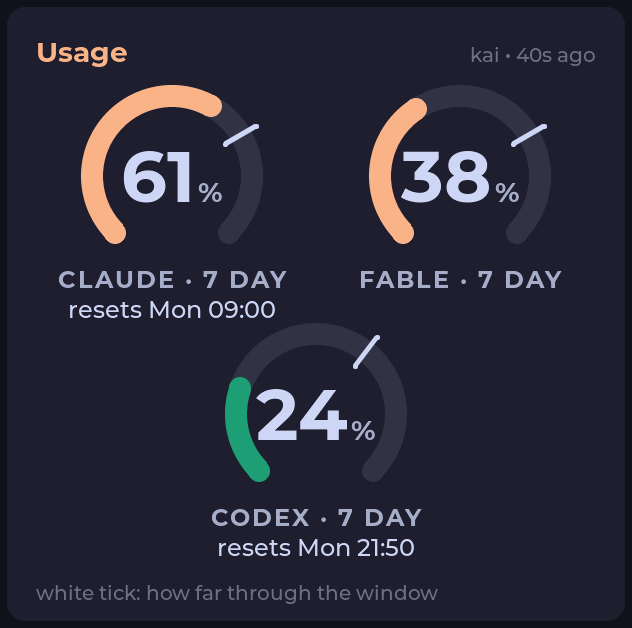
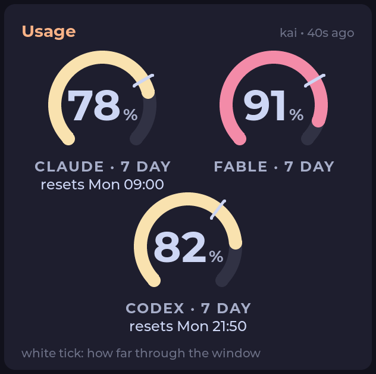
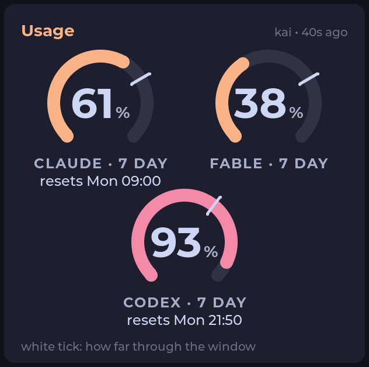
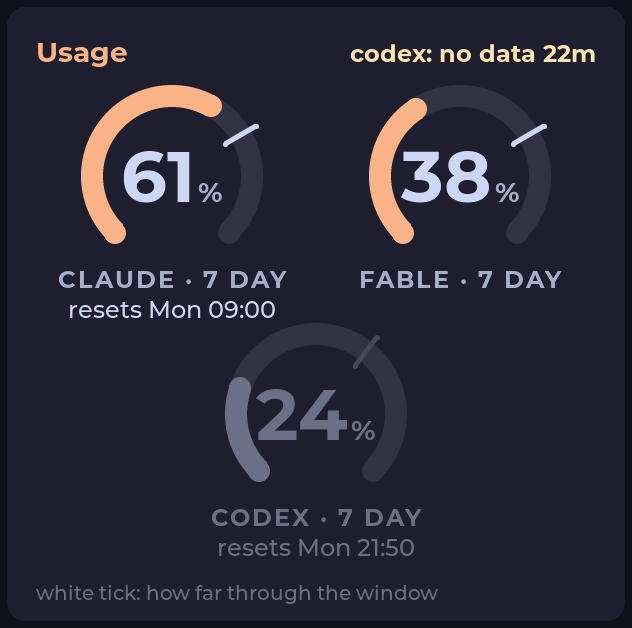
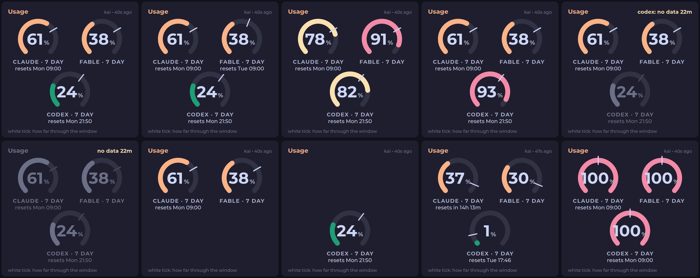
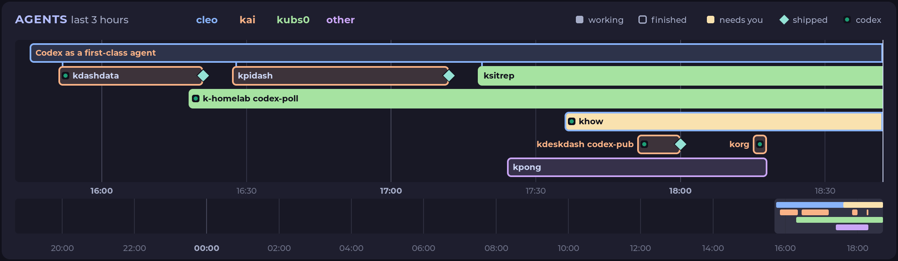

Sprint 049, korg WI 4941 (proposal korg:4950). These are the dashboard's own
pixels: renders by tests/render_limits and
tests/render_agents from the shipped widgets, not a sketch. The
decisions they implement are Ken's, from the 2026-11-25 mockup session (korg WI
4940, comments 5112 and 5113).
Claude 7 day and Claude Fable on top, Codex 7 day centred below in the Codex
green (#1D9E75). Long windows only. A pace tick on every ring; a
reset line under each, with the Fable line dropped when it resets within 2 h of
Claude's week. Every ring shifts to yellow at 75 % and red at 90 %.





A Codex bar carries a green on a small Crust patch at
its left end, before the name. Claude bars stay unmarked; host keeps the border
and fill, state keeps the fill. The dot stays with the bar when the name is
drawn to its left (kdeskdash codex-pub), and a Codex bar too short
for its marker is widened to hold it (korg, far right) rather than
losing it. The day strip stays by host; the legend gains "codex".
